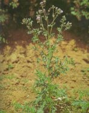
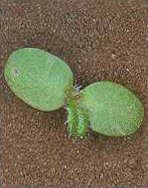
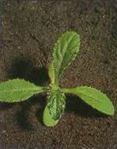

MEZEI ASZAT (ACAT)
CIRSIUM ARVENSE (L.) Scop. (CIRAR)
ÉLETFORMA: G3
TERMÉS: A kaszat alakja az oválistól a hosszúkásig
változik. Oldalt összenyomott vagy háti irányban görbült. Sárgásbarna, néhány
igen finom, sima hosszbarázdával gyöngyözött, selymes fényű bóbitával.
Csúcskoronggallérja világosabb sárga. 2,5-3,0 mm hosszú, 0,8-1,0 mm széles.
Ezermagtömege 1,1-1,3 g. Magprodukciója változó, átlag 5300 körüli. A kaszatok nagy
részét élősködő lárvák elpusztítják. A magvak a nyugalmi periódus megszűnése
után 25-30 °C között változó hőmérsékleten, fény jelenlétében csíráznak a
legjobban.
CSÍRANÖVÉNY: Sziklevelei kerekded-oválisak, érdesek, 5-6
mm hoszszúak. Az első lomblevelek tojásdadak vagy lándzsásak, szélük bogas és
tüskés csúcsú.
KIFEJLETT NÖVÉNY: Évelő, szára 30-I50 cm magas, mereven
felálló, zöld, dúsan ágas. Levelei igen változók, ennek alapján sok alakja
különböztethető meg. Lándzsásak vagy lándzsás-hosszúkásak, keskenyedő tövűek,
kopaszok és épek, csak sertefogacskásak, karéjosak vagy mélyen hasogatottak, erősen
szúrós tövisesfogasak, sokszor bodros hasábokkal. A fészkek sátorvirágzatban
egyesével vagy hármasával az ágak végén állnak. Kétlaki növény. Porzós virágú
fészkei csaknem gömbölyűek, a termős fészkek hengeresek, lila színűek. Gyökerei
hosszúak, tarackszerűek. Ezeken rügyek vannak, amelyek hajtásokat képeznek.
Kártétele igen jelentős, megfigyelések szerint őszi búzában 2 kifejlett növény
m2-enként 15 %-os terméscsökkenést okozhat.
ELTERJEDÉSE: Egész Európában, Ázsiában és
Észak-Amerikában elterjedt. Előnyben részesíti az üde, tápanyagban gazdag, mélyen
lazított vályogtalajokat. Nitrogén- és kötöttségjelző növény.
 |
 |